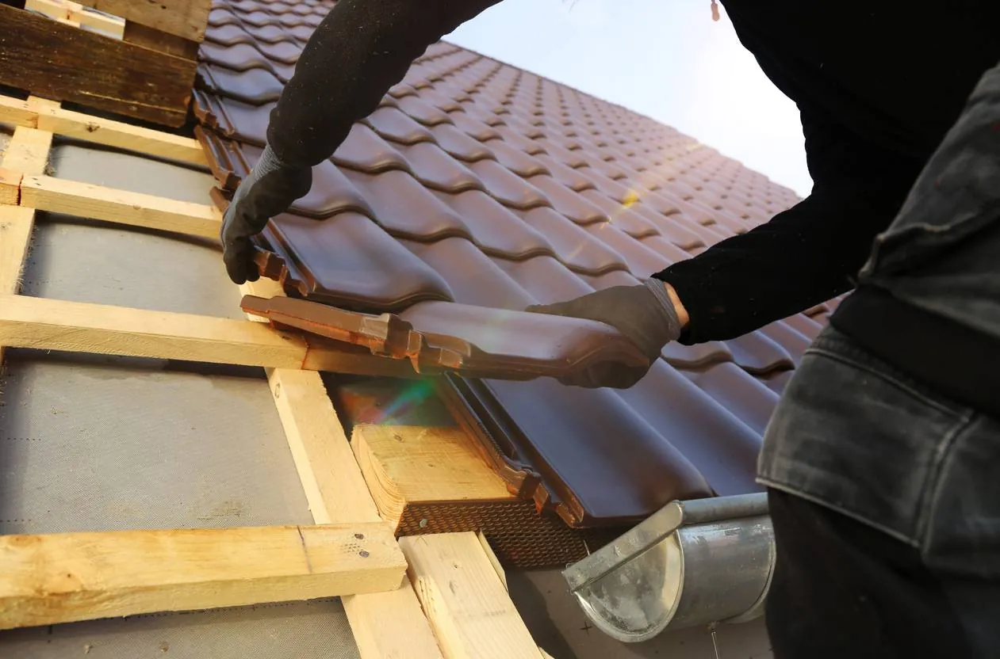
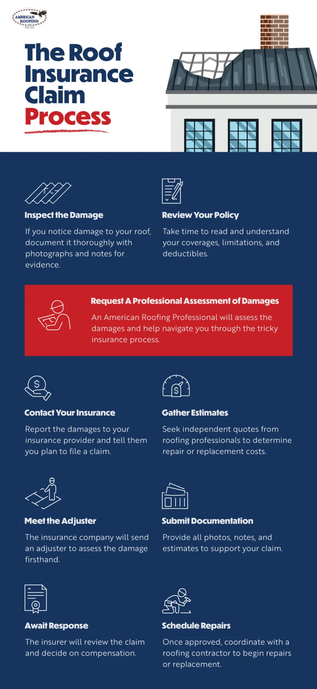

Roof damage from wind, hail, or severe weather can leave you wondering what to do next. American Roofing Company helps Utah homeowners inspect roof damage, document roof conditions, and provide repair or replacement estimates to support the roof insurance claim process.
Request Free Quote!
Understanding the Roof Insurance Claim Process in Utah
Roof damage can happen for many reasons, including severe weather or sudden damage such as from a fallen tree. Once the damage is discovered, many homeowners ask the same questions:
- Does homeowners insurance cover roof leaks?
- Does homeowners insurance cover roof replacement?
- Should I call my insurance company or schedule a roof inspection first?
The answers depend on several factors, including your insurance policy, the cause of the damage, the age and condition of your roof, and your insurance company’s review. While no roofing contractor can guarantee claim approval or coverage, understanding the roof insurance claim process can help you know what to expect.

What Is a Roof Insurance Claim?
A roof insurance claim is a request for your homeowners insurance company to review roof damage and determine whether your policy provides coverage for repairs or replacement. The claim typically includes information about the cause of the damage, along with documentation such as photographs, inspection findings, and repair or replacement estimates.
The insurance company reviews the claim, evaluates the damage, and decides whether coverage applies based on the terms of your policy. While a roofing contractor can inspect your roof, document visible damage, and provide repair or replacement estimates, the insurance company makes the final decision regarding coverage and claim payment.
What to Do Before Filing a Roof Insurance Claim
| Take Photos and Videos | Prevent Additional Damage | Review Your Insurance Policy | Avoid Permanent Repairs |
| From the ground, document visible roof damage from multiple angles, including missing shingles, hail damage, flashing, gutters, and interior leaks. Clear photos and videos can support your claim documentation. | If it’s safe to do so, take reasonable temporary measures to prevent further damage, such as covering exposed areas with a tarp. Save receipts for emergency materials or temporary repairs. | Review your deductible, coverage limits, exclusions, and claim reporting requirements. Coverage depends on your policy, the cause of the damage, and your insurance company’s review. | Unless emergency repairs are needed to prevent further damage, avoid making permanent repairs before your insurance company inspects the roof. This helps preserve the damage for evaluation. |
How to File a Roof Insurance Claim
Once you’ve documented the damage and reviewed your insurance policy, the roof insurance claim process typically follows these steps.
1. Contact Your Insurance Company
Report the roof damage to your insurance company and begin the claims process according to your policy’s requirements.
2. Schedule a Roof Inspection
A professional roof inspection can document damage, identify repair or replacement needs, and provide an estimate to support the insurance claim process.
3. Meet with an Insurance Adjuster
Your insurance company may schedule an inspection with an adjuster to evaluate the reported roof damage and determine whether coverage applies.
4. Review the Claim Decision
Your insurance company will determine whether the damage is covered and explain any applicable deductible, payment, or policy limitations.
5. Review Your Roofing Options
Review your repair or roof replacement options with your roofing contractor and determine the best path forward based on your roof’s condition and the claim decision.
6. Complete the Approved Work
Schedule the approved roof repairs or replacement to restore your roof and help protect your home from further damage.

Does Homeowners Insurance Cover Roof Leaks?
Many homeowners are surprised to learn that the cause of the leak often matters more than the leak itself.
May be covered
- Roof leaks caused by covered events such as hail, high winds, fallen trees, or other sudden accidental damage
Generally not covered
- Normal wear and tear
- Aging roofing materials
- Poor maintenance
- Long-term deterioration
- Damage caused by neglect
If you’re unsure what caused your roof leak, a professional roof inspection can document damage, identify repair or replacement needs, and provide an estimate to support the roof insurance claim process.
Does Homeowners Insurance Cover Roof Replacement?
Homeowners insurance may cover roof replacement when the damage is severe and results from a covered event.
Replacement may be considered when
- Storm, wind, or hail damage is extensive
- A fallen tree or other covered event significantly damages the roof
- Repairs are no longer a practical solution
Replacement is generally not covered for
- Normal aging
- Wear and tear
- Poor maintenance
- Gradual deterioration
Coverage depends on your policy, the cause of the damage, the condition of your roof before the loss, and your insurance company’s evaluation.
American Roofing Company can inspect your roof, document visible damage, and provide repair or replacement estimates to help you understand your options.
What You May Still Pay After a Roof Insurance Claim
- Your deductible
- Any uncovered damage
- Optional upgrades
- Depreciation, depending on actual cash value versus replacement cost coverage
- Differences between the insurance estimate and the final roofing scope
Related Resource: When Will Insurance Pay for a New Roof?
Roof Inspection for Insurance Claim
A roof inspection is often one of the first and most important steps in the roof insurance claim process. It helps document the condition of your roof, identify visible damage, and determine whether repairs or roof replacement may be recommended.
During an inspection, American Roofing Company may evaluate:
- Missing, lifted, or damaged shingles
- Hail, wind, and storm-related roof damage
- Damaged flashing, vents, and roof penetrations
- Gutters, downspouts, and other visible drainage components
- Active roof leaks and signs of water intrusion
- The overall condition and approximate age of the roof
- Whether repairs or roof replacement is the best solution
Following the inspection, we’ll explain what we found, answer your questions, and provide documentation and a repair or replacement estimate. Whether you ultimately file an insurance claim or not, you’ll have a clear understanding of your roof’s condition and the recommended next steps.
American Roofing Company Reviews
FAQs
Start with an Honest Roof Inspection
If your roof has been damaged by wind, hail, or severe weather, American Roofing Company can inspect your roof, document its condition, and help you navigate the next steps in the roof insurance claim process.
Whether insurance ultimately covers the damage or not, you’ll have a clear understanding of your roof’s condition and the recommended next steps.